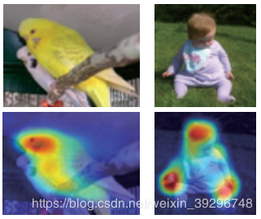
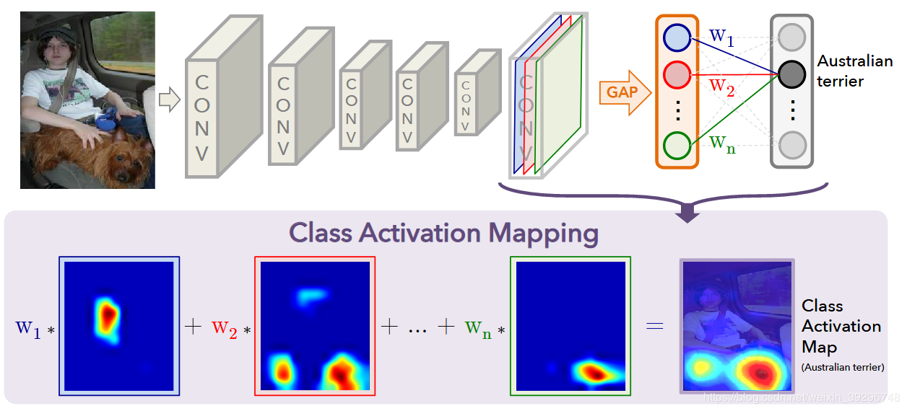
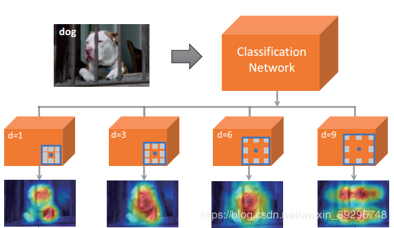
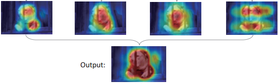
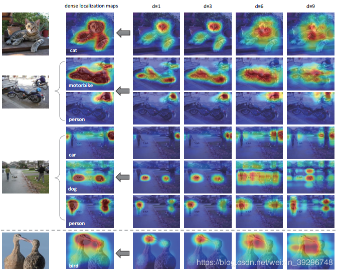

CVPR2018-弱监督语义分割-Revisiting Dilated Convolution
时间：2020-3-9
摘要：在弱监督语义分割领域，如何通过图像级别的标签产生密集的目标定位区域一直是一个难以攻克的点。这篇paper从感受野的角度出发，重新回顾了空洞卷积的作用，并将空洞卷积首次应用于弱监督中的产生密集的目标定位区域。 欢迎关注左侧公众号获取更多弱监督论文阅读笔记
一、概述
尽管弱监督语义分割的方法取得了显著的进展，但是弱监督分割方法的效果仍然不如全监督分割方法。作者认为二者性能上的差距主要来自于难以使用图像级的监督来训练神经网络以生成高质量的密集目标定位图。如下图，这是在这篇论文之前最优秀的使用图像级的监督来生成目标定位图的方法CAM [1] 对目标定位的效果。
可以看到，CAM产生的定位区域通常很稀疏，常常定位目标最具判别力的区域（比如说鸟类的头部、人的头部以及躯干）。所以说CAM的定位是稀疏而不完整。但是目前很多优秀的弱监督语义分割模型的都要依赖于CAM的定位结果。比如我上一篇博客提到的SEC [2] 。所以说，十分有必要去提高定位结果的完整性与密集性。这也是这一篇论文的出发点与意义所在。
二、方法详解
作者在CAM的基础上做了一个实验：将最后一层的卷积层替换为不同扩张率的空洞卷积。再使用CAM的方法去定位。
CAM框架
本文框架
可以看到，随着扩张率d的增大，定位结果开始变得密集而完整。对此，作者给出的解释是：随着扩张率的增大，卷积核感受野也随之变大，使得周围具有判别力的特征转移到那些不具有判别力的区域，从而使得目标原本被注意不到的地方被注意到。但是扩张率的增大也带来了一个新的问题—会使得那些不属于这个目标的区域也被注意到（如d=9的情况，有很大一部分定位区域不属于狗这个目标）。于是，为了解决这个问题，作者又提出了一个方法—anti-noise fusion strategy。我们可以观察到，对应不同的d产生的定位区域如果能融合在一起实际上就能产生一个密集而完整的定位图：
那么anti-noise fusion strategy是怎么做的呢？作者注意到，定位结果与目标重合的区域实际上每个定位图都有，而定位结果与目标不重合的区域在不同的扩张下表现出多样性。为了消除定位结果与目标不重合的区域，作者对不同扩张卷积块生成的定位映射进行平均运算(d = 3,6,9)，然后，将平均图与标准卷积(d = 1)的定位图中相加，生成最终的定位图。这样，就既不会丢失标准卷积所定位出的精确区域又使得定位结果与目标不重合的区域被消除。
以下是使用作者所提出的方法产生的可视化定位效果：
三、总结与反思
我认为扩大感受野后，定位区域的扩大是显然的。感受野对应的是当前卷积核所能看到的原图的区域，你所能看到的区域越大，当然你就更有可能找到的更多具有判别力的区域。而之前CAM的训练方式感受野过小。所以它定位出来的的区域很稀疏 这里一块那里一块。
引用
1、CVPR_2016: Learning Deep Features for Discriminative Localization ↩︎
2、ECCV_2016:ECCV_2016:Seed, Expand and Constrain: Three Principlesfor Weakly-Supervised Image Segmentation ↩︎